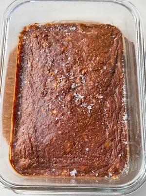

Chocolate Banana Pancake Bowl (added sugar free, gluten free, dairy free & ready in under 20 minutes)
if you've been following the baked pancake bowl trend and haven't tried a banana chocolate version yet, this is your sign. think all the flavors of chocolate banana bread but in a healthy and light sweet treat that you could eat for breakfast. oh and a hidden square of dark chocolate in the center for that gooey pool of melty chocolate making it taste so much more indulgent than it is nutritionally. this is one of those recipes that is super simple but still satisfies your sweet tooth + it's completely added sugar free and has a total of 22g of protein without any protein powder!
overripe bananas are key here and i mean the more overripe the better. as a banana ripens, its starches convert to natural sugars, which is what gives you that intense, honey-like sweetness that makes this recipe work without any added sweetener at all. The riper the banana the stronger the banana flavor too, so put the overripe bananas you have on your counter to good use with this Chocolate Banana Pancake Bowl. nutritionally, bananas are a brilliant source of potassium, which supports heart health and muscle function, as well as vitamin B6, which plays an important role in mood regulation and brain health. they also contain dopamine and catechins, both of which are antioxidant compounds with anti-inflammatory properties. so you can also feel a lil better about the sweetness in this Chocolate Banana Pancake Bowl.
cacao powder is like the super star of any anti-inflammatory recipe, it gives us that rich chocolatey flavour with a whole load of added benefits. cacao is one of the richest plant sources of magnesium, a mineral that supports muscle recovery, sleep quality and nervous system function (which we all need help with lol) and magnesium is a mineral that a lot of us are deficient in without realising it. it's also packed with flavonoids, particularly epicatechin, which has been well studied for its anti-inflammatory and cardiovascular benefits. the half tablespoon in this recipe gives you that deep, rich chocolate flavour that turns this from a banana bake into a chocolate banana bread flavor wise. You can adjust the amount to your own taste and add a little more if you want a stronger chocolate hit or a little less! Cocoa powder would be the direct substitute here, it is just more processed than cacao powder and therefore doesn't retain the same nutritional value or super rich flavor.
the oat flour and greek yogurt are working together to give this Chocolate Banana Pancake Bowl pancake bowl its structure and that soft smooth texture. oat flour is a great source of soluble fibre (beta-glucan) which supports gut health, helps stabilise blood sugar levels after eating and keeps you fuller for longer. making it the perfect pancake bowl for breakfast or any time of day when you want a more filling snack. the yogurt adds protein and creaminess and helps bind the batter without making it heavy. I love using greek yogurt in this recipe for the extra protein boost and added probiotics. together they give you a bowl that is satisfying and nourishing rather than just a sweet treat, which is exactly what i love about the pancake bowl trend.
why this recipe is nutritionally nourishing: the combination of bananas, cacao and dark chocolate in this recipe makes it a powerful anti-inflammatory bowl. the dark chocolate square in the centre adds flavonoids and additional magnesium on top of what the cacao brings. the egg provides all nine essential amino acids and is one of the most bioavailable sources of protein available. the oat flour's beta-glucan actively feeds beneficial gut bacteria, supporting the gut-brain axis which plays a bigger role in mood and inflammation than most people realise. and the potassium in the bananas works alongside the magnesium from the cacao to support muscle function and reduce inflammation at a cellular level. it's a lot of good work happening inside what tastes like a chocolate banana dessert.
the dark chocolate square in the centre is the best part of this entire recipe! push it down firmly into the centre of the batter before baking so it's fully covered and bakes into a molten, melty pool inside the bowl. to keep this recipe fully added sugar free, make sure you're using a refined sugar free or sugar free dark chocolate. when you come to check if the bowl is done, insert your toothpick into the side of the batter rather than the centre because the chocolate in the middle will always look wet and underbaked even when the rest of the bowl is perfectly cooked. The toothpick should come out 90% clean there may be a little bit of moisture since we have bananas which tend to keep the batter moist.
one thing to note about texture: the lumps in your bowl will depend entirely on how well you mash the bananas before mixing everything together. if you like a smoother, more uniform texture, add all the ingredients except the chocolate to a blender and blend until smooth before transferring to your oven-safe dish and pushing the chocolate into the centre. this gives you a much more pancake-like, even texture throughout. if you don't mind the odd little pocket of banana which makes it feel more like banana bread then mashing by hand in the dish works perfectly and means less washing up lol.
if you love a baked pancake bowl, my lemon drizzle pancake bowl is another single serve bake that is just as simple and satisfying, with a completely different refreshing flavour for when you want something a little more citrus!
Frequently Asked Questions
Why are there lumps in my chocolate banana pancake bowl?
the lumps come from the banana and how thoroughly it's been mashed. if you mash by hand directly in the dish, you'll naturally get some pieces of banana throughout the batter, which a lot of people love because it adds texture and little pockets of extra sweetness. if you prefer a smooth, uniform bowl with no lumps at all, add all the ingredients except the chocolate to a blender and blend until completely smooth before transferring to your oven-safe dish. both methods give a delicious result, it really just comes down to the texture you prefer.
How ripe should the bananas be?
the riper the better, really. overripe bananas with black or heavily spotted skins are what you want here because as a banana ripens its starches convert to natural sugars, making it much sweeter and more flavourful. a fresh yellow banana won't give you anywhere near enough natural sweetness and the bowl will taste quite bland without any added sweetener. if your bananas aren't ripe enough yet, you can speed up the process by placing them unpeeled on a baking tray and roasting at 150°C for about 15 minutes until the skins turn black and the flesh is very soft.
What chocolate should I use to keep this recipe added sugar free?
to keep this recipe fully added sugar free, use a refined sugar free or sugar free dark chocolate. there are a lot of great options widely available now, often sweetened with stevia, monk fruit or erythritol. check the label before buying to make sure there's no added cane sugar or refined sweetener. if you're not strictly avoiding added sugar, any good quality 70%+ dark chocolate works beautifully and pairs really well with the banana and cacao flavours.
Can I add protein powder to make this chocolate banana pancake bowl higher protein?
yes! add one scoop of chocolate or unflavoured protein powder along with the dry ingredients. protein powder is very absorbent so you'll likely need to add a splash of extra liquid to compensate, whether that's water, regular milk or plant milk. add a little at a time until the batter reaches a similar consistency to the original. the bowl may be slightly denser with protein powder added but it will still bake up really well.
Is this recipe gluten free?
yes, oat flour is naturally gluten free which makes this recipe free from gluten. if you have coeliac disease or high sensitivity to gluten, use certified gluten free oat flour as standard oats can sometimes be cross contaminated during processing. also double check the label on your dark chocolate if you need to be strictly gluten free.
Can I make this dairy free?
yes! simply swap the greek yogurt for a thick plant-based yogurt and the recipe is completely dairy free. a thick coconut or soy-based greek-style yogurt are the best options because their consistency is closest to regular greek yogurt and gives you the same creamy, moist texture in the finished bowl. avoid very thin or watery plant-based yogurts as they can make the batter too loose.
How do I know when the pancake bowl is done?
insert a toothpick into the side of the bowl rather than the centre where the chocolate is, as the chocolate will always appear wet. the toothpick should come out clean with just a few moist crumbs. the top of the bowl should look set and matte rather than shiny or liquid. the edges may have pulled away slightly from the sides of the dish. if it still looks very wet on top after 17 minutes, give it another 2 minutes and check again. keep in mind it will continue to firm up slightly as it cools.
Can I use only one banana?
no, the recipe is designed for two overripe bananas and i'd recommend sticking to both for the best result. two bananas provide enough natural sweetness to replace any added sugar as well as the moisture and binding that holds the batter together well. using only one banana will result in a less sweet bowl and a slightly drier, less cohesive batter. if your bananas are very large and very ripe, one and a half could work, but two is really the sweet spot for this recipe.
Pro Tips
- Use the most overripe bananas you can find.
- Push the chocolate square deep enough into the centre of the batter that the batter fully covers it.
- For a completely smooth texture, blend all the ingredients except the chocolate in a blender before transferring to your oven-safe dish.
- Enjoy this pancake bowl warm or chilled.
Chocolate Banana Pancake Bowl (Added Sugar Free, Gluten Free)

Ingredients
Instructions
- Step 1: Preheat the oven to 160°C fan / 170°C.
- Step 2: Add the bananas to an oven-safe dish and mash well.
- Step 3: Add the egg and yogurt and mix to combine.
- Step 4: Mix in the cacao powder, salt and baking powder, then fold in the oat flour until just combined.
- Step 5: Push the square of dark chocolate firmly into the centre of the batter until the batter covers it.
- Step 6: Bake for 15 to 17 minutes. To check if it's done, insert a toothpick into the side of the bowl, not the centre where the chocolate is. It should come out almost clean.
- Step 7: Let it cool slightly and enjoy!
Nutrition Facts
Per one bowl:
*Nutritional information is estimated and will vary depending on the ingredients and brands you use. Basic macros don't reflect the full nutritional value including vitamins, minerals, antioxidants, and other beneficial compounds. Please use this as a guideline only.